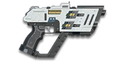

← Back to the U-200 Harbinger comparison
Sage Guide · Nanite Systems Operatives · Pistol
The Nanite Systems Operatives U-200 Harbinger — a semi-automatic pistol firing 300-damage rounds, the hardest hit of any semi-auto pistol here. Two headshots kill up close. Four chest shots kill up close. The price is a 9-round magazine and a 259 ms wait between taps.
The one-line verdict: 300 damage per round — two headshots kill in 0.26 s, four chest shots in 0.78 s, and it still does 200 damage at 50 m. No pistol here punishes a miss harder: 9 rounds, 259 ms between taps, and every miss is a tenth of your magazine. Land your shots and nothing in the sidearm class kills faster; miss and you are reloading while the enemy is still shooting.

The U-200 Harbinger · 1,000 certs · 699 Daybreak Cash
Picture the scene, because you've probably lived it: you're sprinting across a courtyard, an enemy appears, and you do everything at once — hold the trigger down while you're still running, then press aim-down-sights (ADS) a split-second later, finger still down. The sight picture snaps in, it looks precise… and your bullets spray everywhere except the man in your crosshair. He kills you. It feels like the game cheated. It didn't — here's what actually happened.
Four beats, left to right — the same mistake the cards above describe, drawn out.
1 · SprintingYour cone starts maxed at 7.0° — the widest it can ever be.
2 · Trigger heldFiring from the hip while running — every shot adds bloom.
3 · ADS, mid-holdThe sight looks precise — but aiming down sights does not reset bloom.
4 · The sprayBullets fly out of the wide cone you built. The enemy walks away.
Same fight, done right. Each beat has a job, and the order is the whole lesson.
1 · StopLet go of sprint (and the trigger). About 0.3 s for the gun to settle.
2 · AimPress ADS and let the sight come up (~0.15 s).
3 · FireNow fire — from the aimed cone. First shots land where the dot points.
The exception — under ~8 m, skip the whole danceHipfire works, no ADS needed, and stopping is optional. Keep moving, strafe, and let the hipfire ring do the work.
You started firing from a sprint, from the hip. Sprinting is the least accurate state in the game: your cone of fire starts at 7.0° — fully bloomed, the widest it can ever be. Every shot you fire from the hip widens it further still (+0.2° per shot).
Then you pressed ADS mid-hold — and nothing reset. Aiming down sights does not shrink a cone of fire that is already bloomed. The scope only gives you a precise picture; the bullets keep flying out of the wide cone you built while running and hipfiring. That's the whole mystery: accurate-looking aim, wildly inaccurate gun.
Two timers stack the deck further: your gun needs about 0.3 s to settle after a sprint, and raising the sight itself takes ~0.15 s. Trigger held through all of it means your first half-second of fire is pure confetti.
1 · Feet. Let go of sprint (and the trigger, if you're already holding it). Stop, or drop into a strafe — anything but a full sprint.
2 · Sight. Press ADS and let the sight come up. This takes a heartbeat — that's fine, a quarter-second of patience is cheaper than a magazine of misses.
3 · Trigger. Now fire. Starting from the aimed cone of 0.15°, your first shots land where the dot points, and you control the bloom from zero instead of inheriting a maxed-out cone.
Stop → aim → fire. If you take one habit from this entire page, take this one. You'll practise exactly this rhythm in the simulator in section 04.
Every enemy infantry has 1,000 health (500 shield + 500 health). Your bullet does 300 damage up close, fading to 200 at long range. Headshots count double, leg shots count less (×0.9). That gives you three numbers worth memorising:
| Range | Damage | Head | Chest | Legs | Chest vs shielded Heavy |
|---|---|---|---|---|---|
| Close · 0–10 m | 300 | 2 | 4 | 4 | 5 |
| Mid · 10–25 m | 295.24 | 2 | 4 | 5 | 6 |
| Far · 25–40 m+ | 259.52 | 3 | 5 | 5 | 7 |
Perfect-accuracy times to kill: 2 headshots ≈ 0.26 s, 4 chest shots ≈ 0.78 s up close. Headshots save 67% of the kill time at close range — and with a 200 ms first-shot delay added, the close chest kill takes 0.98 s against 0.46 s for headshots, still a 53% saving. In real fights you'll land maybe half your rounds — still, this is why the head matters so much on this gun.
Full power to 8 m, then a steady slide to minimum at 50 m. The gold line would show an ammo option — this gun has none, so there is only the one line.
One gun, four fighting styles. The right technique changes with distance — use the range finder below to see what your bullets do at any range, then learn the four bands underneath it.
How to fight hereAim down sights at the upper chest and neck. Fire in short holds — your recoil climbs into the head for free damage.
Aim: centre of the chest, from the hip. Keep moving.
Scoping in costs you time and drops your speed to 0.75× — at arm's length that gets you killed. Pistols have the tightest hipfire of any weapon class. Strafe side to side (A/D) while firing so you're hard to track.
Aim: neck / upper chest. Tap on cadence — one round per 259 ms.
This is where the gun earns its keep: 295.24 damage at 10 m, still 259.52 at 25 m. Start your crosshair at the neck — the straight-up recoil walks the next tap into the head. Strafe while scoped; at 0.75× you move faster aimed than a scoped Heavy, and a moving target still beats a still one.
Aim: chest. Slow taps, one round per 259 ms, with a real pause.
Damage is sliding toward 200 and your cone of fire blooms if you tap too fast. Tap, let the cone settle, tap again. Recoil kicks straight up, vertical 0.8 — firm, and every round is a commitment at 259 ms. Crouch or stand still when you can — both tighten your shots.
Aim: chest. Taps at exposed targets only.
At 200 damage you need 5 chest hits — a long, loud advertisement of your position. Take these shots at stationary or fleeing targets, medics reviving, and engineers on turrets. Otherwise, your better play is to close the distance behind cover. Knowing when not to shoot is a skill too.
Your accuracy is decided by two things before skill even enters it: what your body is doing (your stance sets the starting cone of fire) and what your finger is doing (holding the trigger grows that cone with every shot). The U-200 Harbinger has no fire-mode switch — semi-automatic only — so "firing modes" are something you do with your finger, not a setting on the gun.
| Stance | Starting cone | What it means for you |
|---|---|---|
| Sprinting | 7.0° | Maxed out — the widest the cone can be. This is the section 01 disaster: never start firing from a sprint. |
| Hipfire, moving | 1.5° | Walking or strafing from the hip. Fine inside ~8 m, leaks rounds past the target beyond it. Your cone stays at its starting size for the first 2 shots. |
| Hipfire, standing | 1° | Your point-blank default. The 0.14 m ring at 8 m in section 05 is this stance drawn out. |
| Hipfire, crouched | 1° | The tightest hipfire you have (1.25° if you crouch-walk). Crouch when holding a doorway from the hip. |
| Aimed (ADS), feet planted | 0.15° | Standing or crouched makes no difference here — about three times tighter than hipfire. This is why section 01's order matters. |
| Aimed (ADS), strafing | 0.15° | The moving floor — the same as standing still, so strafing costs you nothing in cone size on this gun. You still move at 0.75× while scoped. Strafe between bursts to stay hard to hit; plant your feet during each burst. |
| Mode | How your finger does it | Use it at |
|---|---|---|
| Tap on cadence — the default | One click per round, every 259 ms | Almost everything. The rhythm is the weapon: steady clicks at the refire keep the cone small and the damage flowing. |
| Slow aimed taps | One click, a real pause, one click | 25 m and out, at exposed or stationary targets. Lets the cone fully settle between rounds, so every tap goes where the dot is. |
| Never mash | Clicking as fast as your finger will go | Nowhere. The gun fires once per 259 ms no matter how fast you click — extra clicks are wasted, and a rushed tap fires into a bloomed cone. |
A target 15 m away, aiming down sights. Click TAP once per round (mouse, touch, or Space) — one click, one shot. The gun fires once per 259 ms, no faster: clicks that land too early are wasted and counted. Find the 259 ms rhythm and hold it. Tap too fast and the cone grows; pause and it settles. This practice window is shared by the whole Sage series: it's driven by a weapon profile plugged into the window — here the U-200 Harbinger's (232 RPM, 0.15° starting cone, 0.2° bloom per shot, target at 15 m) — and the spread is drawn at true scale from those numbers.
Cone of fire — grows if you tap too fast, settles when you pause.
Your cadence will be graded here — steady taps at 259 ms is the goal.
Some things are easier to show than to say. Here's what your bullets actually do: how wide hipfire spreads at 8 metres, what a good firing rhythm looks like, and what the 2x sight really changes. The hands-on version — holding the trigger yourself — is the practice window in section 04.
A full-size target 8 m away — an arm's-length room fight. The rings show where hipfire rounds land around your aim point (the chest). Sizes are drawn to scale from the gun's real cone-of-fire numbers.
Read it this way: standing still, the 0.14 m ring fits well inside the chest — most rounds hit a target this size, which is why hipfire works point-blank on this gun. Move and it grows to 0.21 m — still inside the torso — so even strafing hipfire stays on him at arm's length. A Laser Sight makes moving hipfire as tight as standing still. The rings only grow with distance while the man doesn't, so past ~10 m they start leaking past him: the exact moment to switch to aiming down sights, where the spread shrinks to a dot. (Ring sizes use the real geometry: spread diameter = 2 × distance × tan(cone ÷ 2).)
One click per round, every 259 ms. Clicking faster does nothing — the gun will not fire — and the extra clicks only rush your aim. Same 10 rounds, two very different outcomes:
The target pattern is one tap per 259 ms — that is the gun's own rhythm. Faster clicks are wasted; slower clicks leave kill time on the table. A steady tap also keeps the cone small: bloom (0.2° per shot aimed) only builds when taps come faster than the cone can settle.
No zoom. The target at 25 m is small but the view is wide open — you see the crate, the tower, and the next enemy coming. Fast to aim, nothing blocks your edges. Best inside ~25 m.
Same target, same 25 m — but he looks twice as tall, so placing shots on his chest and head gets much easier. The price: your view narrows to the round window, the crate and tower are gone, and close targets feel fast and huge. Best at 15–40 m.
That's the whole 30-cert decision from section 06 in one picture: 1x for awareness, 2x for precision. Most veterans carry both and swap per base — indoors 1x, open ground 2x.
Unlike the starter pistols, the U-200 Harbinger ships bare — iron sights, no rail, no barrel. Nothing here is free except the gun itself, so buy in the order shown and stop whenever the gun feels right. Every optic costs 30 certs; every barrel and rail option costs 100, except the Extended Magazine (see below).
The chunky post-and-ring sights the gun ships with. Usable, but they eat a lot of your view — the first thing to replace.
Good: your first hour, while you decide whether you like the gun.
Bad: any fight past 20 m — the front post covers the target you're trying to hit.
A clean red-dot sight with no zoom. Your default once you own it, and honestly your best all-round option.
Good: everywhere indoors and out to ~25 m — which is most PlanetSide fights.
Bad: picking out targets past 30 m; that's what the 2x is for.
Doubles your view magnification. Costs almost nothing — the price of a couple of kills.
Good: open-field bases, tower fights, and your 15–40 m aimed game. Swap between 1x and 2x per fight.
Bad: tight indoor rooms — the zoom makes close targets feel fast and huge.
The U-200 Harbinger's recoil is already manageable — recoil kicks straight up, vertical 0.8 — firm, and every round is a commitment at 259 ms. Plenty of veterans run this slot empty forever.
Good: your first weeks. Spend certs on your suit slots and the rest of your kit first.
Bad: nothing — there's no downside to an empty slot.
You vanish from the minimap when firing and your shots are quiet. In exchange, damage starts falling off sooner and bullets fly 15% slower (350 → 298 m/s) — harder to lead moving targets.
Good: flanking behind enemy lines, rooftop work, solo play behind the front.
Bad: front-line fighting — and note the price on this gun: with a short damage range, the falloff penalty bites almost immediately. You pay the damage cost for stealth you don't need.
Hides your muzzle flash so your own view stays clear at night — but you appear on enemy minimaps from 15 m farther away.
Good: night fights where your own flash blinds you. A comfort pick, nothing more.
Bad: as an early purchase — it changes no fight outcome. Buy it last, if ever.
Hipfire accuracy improves by a third (33% tighter cone). Replaces the Extended Magazine — you can't have both.
Good: indoor point-holds and stairwell fights where you hipfire inside 8 m.
Bad: open bases — you give up magazine space for a bonus you rarely use.
A torch whose beam reveals cloaked infiltrators. Toggle it with the attachment key (X by default).
Good: hunting a stalker infiltrator camping your capture point — sweep corners with it.
Bad: as your everyday rail — it gives zero accuracy help, and the beam advertises your position.
Increases the magazine by +3 rounds, and the weapon takes 15% longer to equip and unequip. Replaces the Laser Sight — you can't have both.
Good: almost every build — more rounds is the most honest upgrade a pistol can buy.
Bad: nothing meaningful. It only stops helping if you never stay in a fight long enough to need the extra rounds.
A pistol is a sidearm: every setup below is a pairing, not a standalone kit. The primary does the fighting; the U-200 Harbinger finishes it, covers the reload, or saves you at arm's length. Pick the pairing that matches the primary you actually run.
0 certs · Day one
What the purchase buys you. Genuinely good — learn the gun on this before spending anything.
230 certs · Recommended
The best value in this whole guide. Covers every fight from a doorway to a tower courtyard, and the extra rounds mean you stop choosing between the kill and the reload.
130 certs · Indoor brawler
Built to hipfire down stairwells and hold a capture point room. Swap back to the All-Rounder outdoors — the Laser Sight is a close-range tool.
230 certs · Flanker
No minimap blip, quiet shots, tight hipfire for the kills you take from behind. Weak in a fair fight — so don't take fair fights.
The Harbinger fires as fast as you click, but no faster than one round per 259 ms. Clicking faster wastes clicks; clicking slower wastes time. Find the rhythm in the trainer in section 04 and make it muscle memory.
Two headshots kill up close in 0.26 s versus four chest shots in 0.78 s — the biggest headshot payoff of any pistol here. Aim at the neck and let the straight-up recoil carry the next tap into the skull.
Nine rounds is two kills if you never miss, one kill and a reload if you do. Never take a low-percentage shot with this gun; a miss costs more here than on any other pistol.
Your primary's reload is the Harbinger's job. Swapping to the pistol takes about 0.25 s; reloading the primary takes seconds. When the rifle clicks dry, two Harbinger taps can end the fight.
Reloading with rounds left takes 1.55 s; an empty gun takes 1.9 s. Nine rounds means you reload often — do it after every kill, behind cover, and it never costs you a fight.
Walk with your crosshair at head height, pointed where an enemy's head will appear. While firing, tap A/D to strafe: your aimed cone is 0.15° standing still and 0.15° strafing — the tightest aimed cone of any pistol here — so strafe from the first shot.
Every gun has a price. Here's where the U-200 Harbinger pays — and the habit that covers each hole.
The smallest magazine of any conventional pistol here. One missed round is 11% of your magazine; three misses and you cannot kill a second enemy without reloading.
Play around it: Play around it: Buy the Extended Magazine (+3 rounds, 200 certs) and reload after every kill. Never open a 1-vs-2 with a half-empty Harbinger.
259 ms between rounds is the longest refire of any semi-auto pistol here. A miss costs a quarter-second, and the kill stretches to 1.04 s at 40 m.
Play around it: Play around it: Don't take the shot until the dot is on him. The Harbinger rewards patience more than any other pistol — one settled tap beats two rushed ones.
Hip bloom is 0.20° per shot and aimed bloom 0.20° — the highest bloom of any pistol here. Tap too fast and the cone grows faster than your aim can follow.
Play around it: Play around it: Tap on cadence and let the cone settle between taps. The 0.15° aimed cone is the tightest here — protect it by not rushing.
Four chest shots to kill means a 44% accuracy requirement just to kill one target on one magazine — and that is before the second enemy.
Play around it: Play around it: Aim for the head. Two headshots kill, and the headshot requirement turns the small magazine from a weakness into a strength.
There is no ammunition option on this gun — no soft point, no high velocity. The damage curve is what it is.
Play around it: Play around it: The curve is already generous — 200 damage at 50 m. Fight at 0–25 m, where you are at 260–300 damage, and let the range take care of itself.
Open the world map, travel to VR Training, and run these on the target dummies. Five minutes before a play session beats an hour of dying confused.
Use the tap trainer in section 04. Click once per round at the 259 ms rhythm — not faster, not slower. Goal: ten taps in a row inside the on-cadence window.
At 5–10 m, kill dummies with two headshots — nothing more. If it takes three taps, slow down and re-aim between them. Goal: five two-tap kills in a row.
Walk the dummy range keeping your crosshair glued to neck height the whole time, snapping to each new target without dipping to the floor or sky. Slow and clean first; speed comes on its own.
Pick a dummy, stand 5 m away, and circle it with A/D while tapping it down without stopping. This is your point-blank survival skill — the one that fires while your movement does the defending.
Empty your primary into a dummy, swap to the Harbinger, and finish the dummy with two taps. Repeat until the swap is automatic — in real fights you will do it without thinking, which is the point.